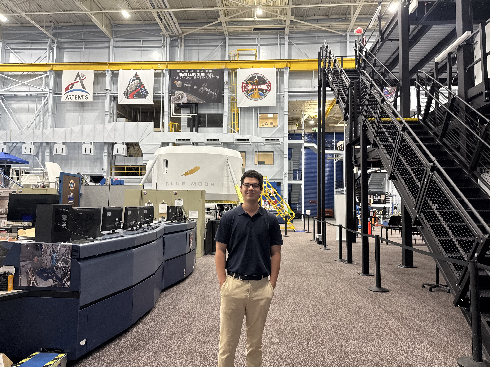
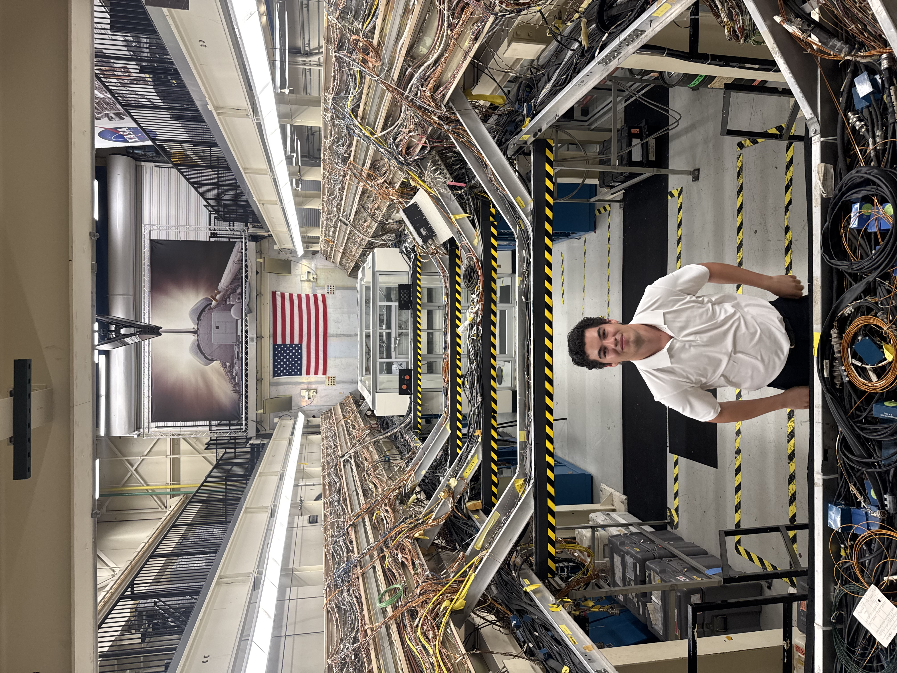

Johnson Space Center, HoustonNASA Johnson Space Center
- Built a C++ and Python ROS2 perception stack fusing stereo camera and 128-beam LiDAR data for real-time terrain reconstruction, generating terramechanics datasets used to validate lunar rover mobility for Artemis missions.
- Implemented a sensor fusion pipeline integrating a Fixposition Vision-RTK 2 with hardware-timestamped LiDAR synchronization, reducing visual odometry pose drift by roughly 90% in high-glare outdoor conditions.
- Architected the full multi-sensor payload — Jetson AGX Orin, three ZED stereo cameras, and an Ouster OS0-128 — end to end, from hardware bring-up through ROS2 driver integration and deployment for field operation.